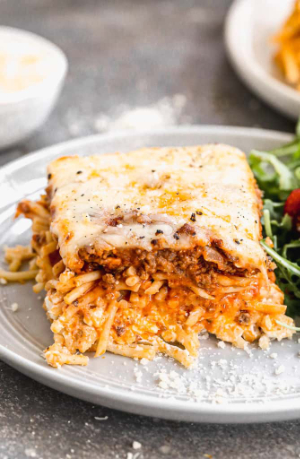

Million Dollar Spagetti

Million Dollar Spagetti
Million Dollar Spaghetti is a spaghetti casserole with layers of noodles, cheese, and homemade meat sauce. It’s budget friendly, easy to make, and a meal the whole family will love.
Ingredients
- 16 ounces spaghetti noodles
- 1/2 pound ground beef
- 1/2 pound ground Italian sausage or pork sausage
- salt and pepper , to taste
- 1 small onion , chopped
- 2 cloves garlic , minced
- 24 ounces marinara sauce
- 3 Tablespoons butter
- 8 ounces cream cheese , softened
- 1/4 cup sour cream
- 1 cup cottage cheese or ricotta cheese
- 2 cups shredded mozzarella cheese
- 2/3 cup freshly grated parmesan cheese